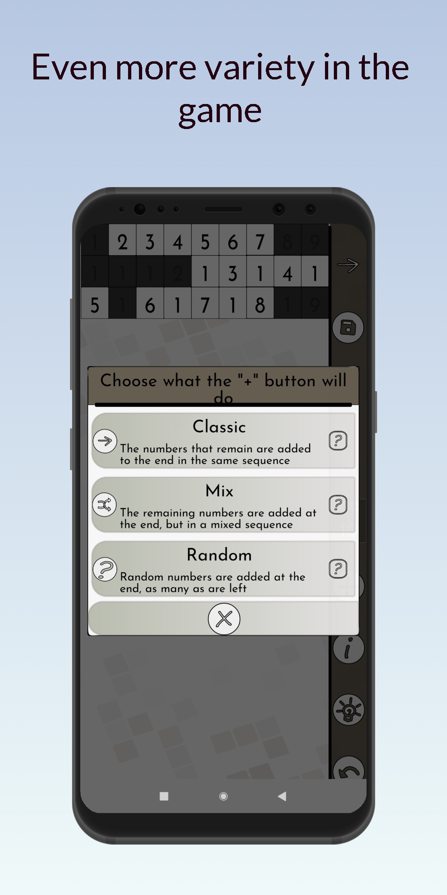
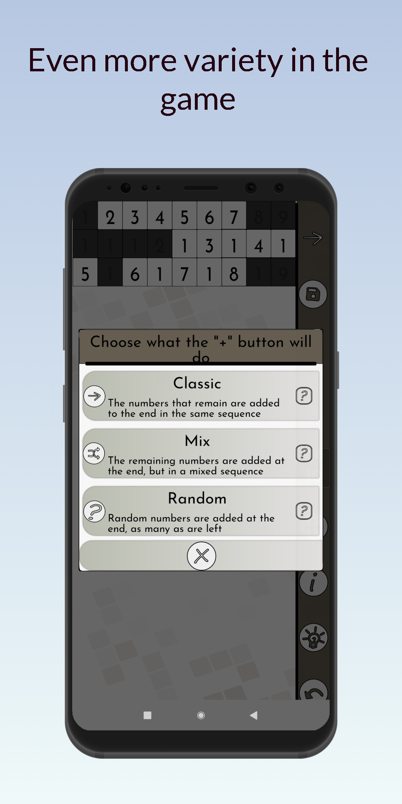
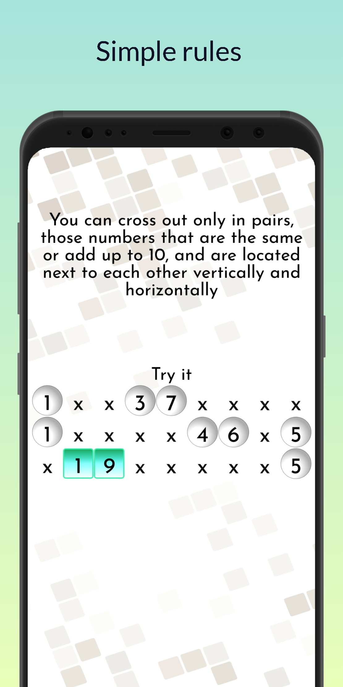
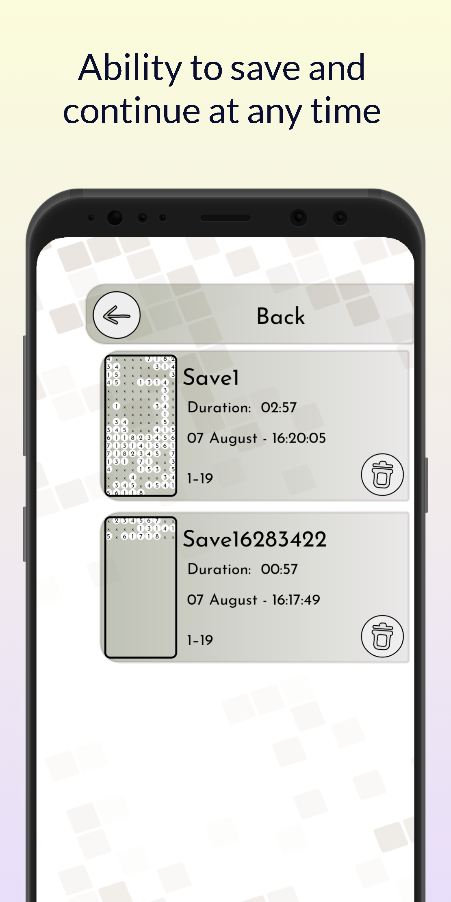
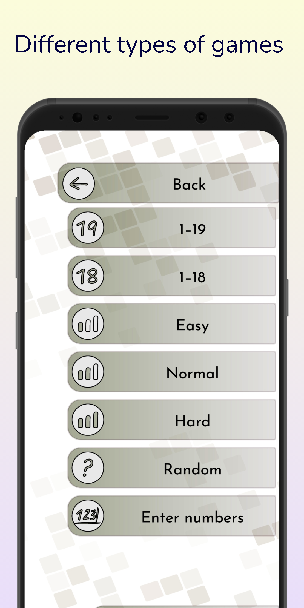
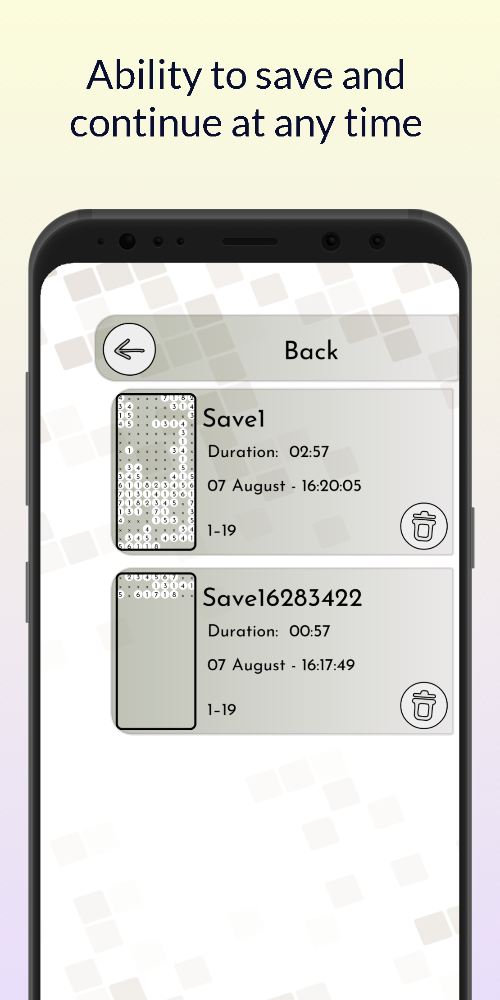
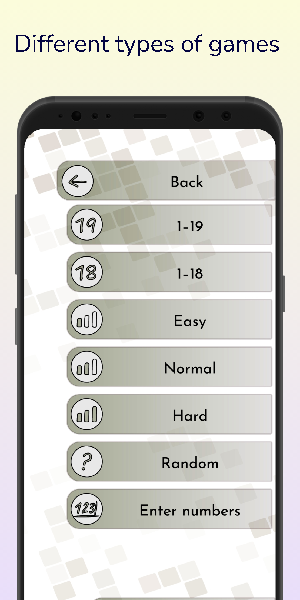
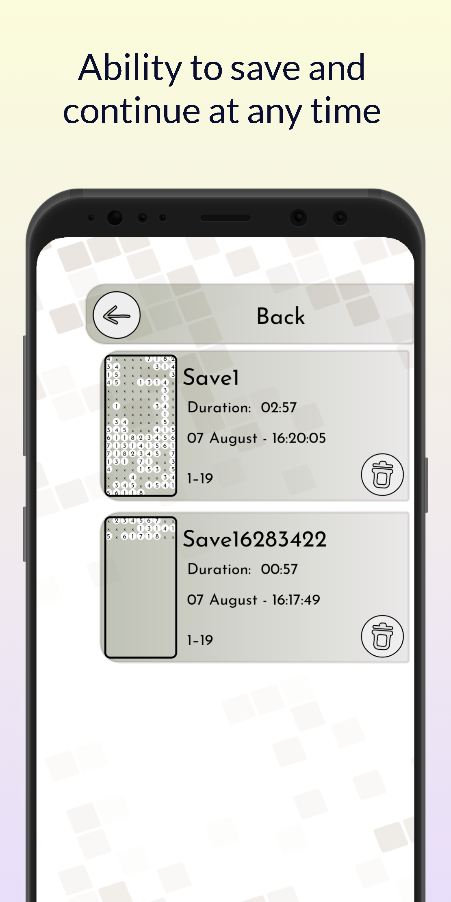
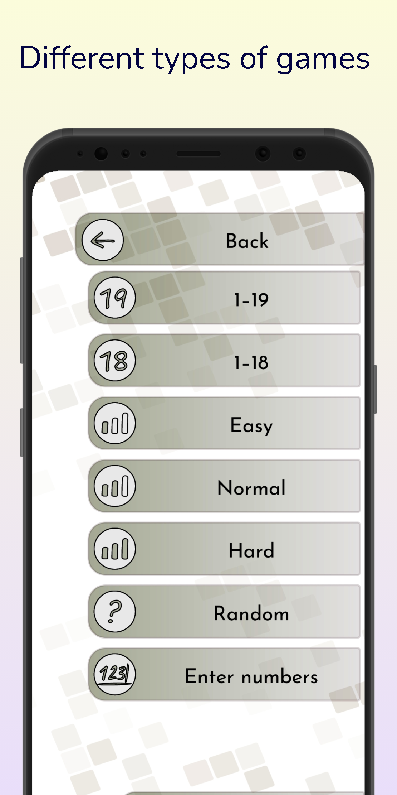

The game that everyone knows from childhood, which is
known under
different names - "Seeds",
"Numbers", "Collect ten", "Fortune-telling", "Columns", "1-19". Different names, but the principle is the same,
you
can cross out all the numbers on the field, with very simple rules, you can cross out only in pairs and only
those
numbers that are the same or add up to 10, and are located to each other or through the already crossed out
numbers
vertically and horizontals. Previously, it only required a sheet of paper and a pencil, but now this game is
available for Android.
This game is suitable for adults and children who love a variety of puzzles and think. And also it develops attention, logical thinking, creativity. A good alternative to Sudoku.
Features and Benefits:
- small size
- friendly interface
- 6 types of games
- adaptive top and bottom row
- detailed statistics for each game
- autosave
- saving at the initiative of the user and continuing to any moment
- instruction
- dark and light color theme
- tips
- the ability to undo the last steps
- no intrusive ads
- completely free
This game is suitable for adults and children who love a variety of puzzles and think. And also it develops attention, logical thinking, creativity. A good alternative to Sudoku.
Features and Benefits:
- small size
- friendly interface
- 6 types of games
- adaptive top and bottom row
- detailed statistics for each game
- autosave
- saving at the initiative of the user and continuing to any moment
- instruction
- dark and light color theme
- tips
- the ability to undo the last steps
- no intrusive ads
- completely free
 


 




